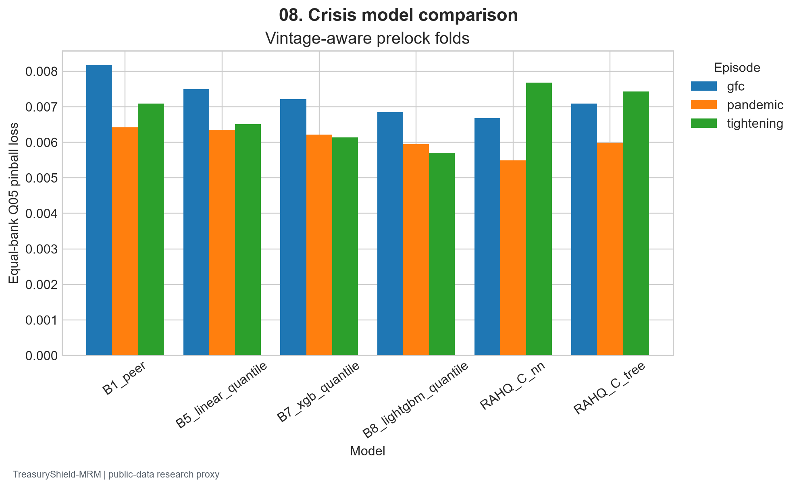
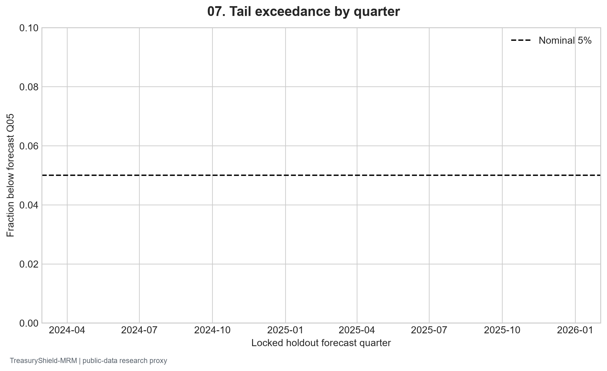

Frozen public-data snapshot fbc0b7b5a2c46fbcc0b5 | Generated 2026-09-27 UTC
Validated official bank, macro, event, and historical holding-company sources feed a point-in-time controlled Core and Enhanced panel. Eleven baseline and challenger families, tree and neural proposed models, prelock ablations/robustness, a locked holdout, independent checks, stress/recovery proxies, and monitoring policies are stored with configs and hashes.
Selected Q05 pinball 0.004323; empirical Q05 coverage 0.0400 versus 0.0500 nominal. See the full fixed-roster results and uncertainty below.
| Model | Q05 pinball | Q05 coverage | Median MAE |
|---|---|---|---|
| B8_lightgbm_quantile | 0.004323 | 0.039951 | 0.031580 |
| B0_unconditional | 0.005539 | 0.039419 | 0.034607 |
| B1_peer | 0.005415 | 0.059660 | 0.035383 |
| B2_persistence | 0.005248 | 0.078938 | 0.036698 |
| B3_ols | 0.006197 | 0.030046 | 0.034883 |
| B4_panel_fe | 0.008335 | 0.033769 | 0.046161 |
| B5_linear_quantile | 0.004529 | 0.038854 | 0.033263 |
| B6_quantile_forest | 0.004807 | 0.035597 | 0.032088 |
| B7_xgb_quantile | 0.004695 | 0.039286 | 0.032583 |
| B9_bayesian_student_t | 0.006787 | 0.026623 | 0.037080 |
| B10_mlp | 0.004877 | 0.012730 | 0.032213 |
| B10_gru | 0.004450 | 0.023100 | 0.030551 |
| RAHQ_tree | 0.004589 | 0.039951 | 0.032257 |
| RAHQ_nn | 0.004766 | 0.013694 | 0.032556 |
| RAHQ_C_tree | 0.004780 | 0.024629 | 0.032718 |
| RAHQ_C_nn | 0.004899 | 0.009107 | 0.034940 |


Coverage varies by period, and public-source liquidity stress lacks contractual flows and collateral rights. The independent findings identify required remediation before operational decisions. This work does not certify a regulatory liquidity metric or production model.
New York Fed harmonized Call Reports; FFIEC CDR; FDIC BankFind; Federal Reserve H.8; ALFRED vintages; Chicago Fed FR Y-9C. Exact downloaded URLs, retrieval times, and checksums appear in the raw manifest and desktop study.